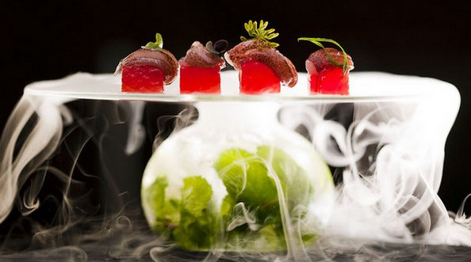

Gastronomia Tradicional
O prazer proporcionado pela comida é um dos fatores mais importantes da vida depois da alimentação de
sobrevivência.
A gastronomia nasceu desse prazer e constituiu-se como a arte de cozinhar e associar os alimentos
para, deles,
retirar o máximo benefício. Cultura muito antiga, a gastronomia esteve na origem de grandes
transformações
sociais e políticas. A alimentação passou por várias etapas ao longo do desenvolvimento humano,
junto com
a evolução do estágio de nômade caçador ao de homem sedentário, quando este descobriu a importância
da
agricultura e da domesticação dos animais.
No Diploma Golondrina também conta com um programa
estágio integrado, oferecendo ao
aluno a vivência prática neste segmento. Esse é o seu passaporte para o mercado de trabalho!
Confeitaria
A palavra Confeitaria vem do latim Confectun e significa aquilo que é confeccionado com
especialidade.
No Brasil, as confeitarias chegaram por volta dos anos 50 e 60, vindos principalmente da França,
famosa como centro dos doces refinados e requintados, e da Áustria com seus doces e tortas finas e
outras delícias. Nessa mesma época, os confeiteiros estrangeiros traziam a técnica do manuseio do
chantilly, do Creme Paris, da massa folhada, do Fondant (Calda usada em coberturas) e foram
obrigados a trabalhar nas padarias, pois eram raras as confeitarias exclusivamente doceiras. A
miscigenação tão característica de nosso país contribuiu muito para dar forma a nossas
especialidades de pratos. A princípio, os doces conventuais portugueses se difundiram, mas logo
foram sendo enriquecidos por ingredientes nativos, como frutas em geral e mandioca.
No Diploma Golondrina também conta com um programa
estágio integrado, oferecendo ao
aluno a vivência prática neste segmento. Esse é o seu passaporte para o mercado de trabalho!
Gastronomia molecular

Gastronomia molecular é a ciência dedicada ao estudo dos processos químicos e físicos relacionados à
culinária. Estuda os mecanismos envolvidos nas transformações dos ingredientes no cozimento e
investiga os aspectos sociais, artísticos e técnicos da culinária e gastronomia (de um ponto de
vista científico).
A expressão "gastronomia molecular" foi criada em 1988, pelo físico húngaro Nicholas Kurti, da
Universidade de Oxford, e pelo químico francês Hervé This.
No Diploma Golondrina também conta com um programa
estágio integrado, oferecendo ao
aluno a vivência prática neste segmento. Esse é o seu passaporte para o mercado de trabalho!